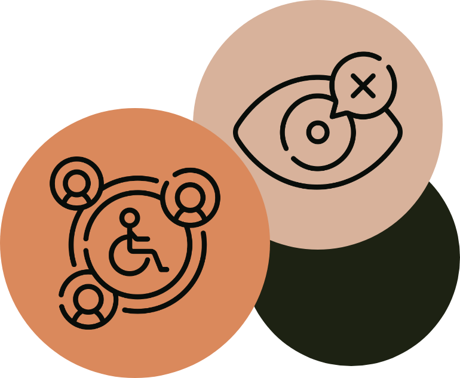
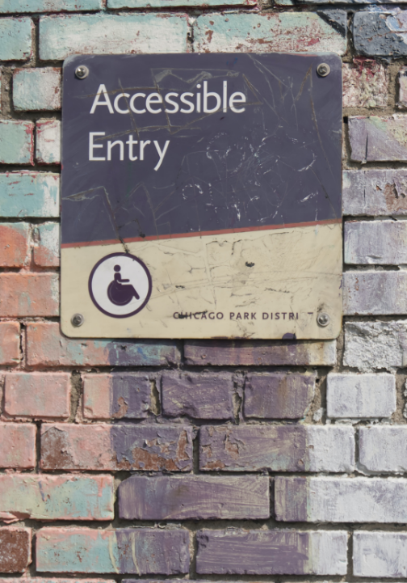

- Blindheit: Menschen, die von Geburt an blind sind oder ihre Sehkraft verloren haben, stehen vor Herausforderungen bei der visuellen Wahrnehmung.
- Sehbehinderung: Personen mit eingeschränkter Sehkraft benötigen möglicherweise besondere Hilfsmittel oder Unterstützung, um Informationen besser erfassen zu können.
- Farbenblindheit: Menschen, die an Farbenblindheit leiden, haben Schwierigkeiten, bestimmte Farben zu unterscheiden, was ihre visuelle Wahrnehmung beeinträchtigen kann.
Niemand ist vor Einschränkungen geschützt
Die meisten Behinderungen werden im Laufe des Lebens erworben
97% im Laufe des Lebens
3% sind angeboren

10%
Unerlässlich für 10% der Bevölkerung
7,8 Millionen Menschen in Deutschland haben eine Schwerbehinderung
Benötigen Tastatursteuerung, Sprachausgabe oder Braille-Tastaturen
30%
Erforderlich für 30%
Menschen mit Sehschwäche
Erschwerte Bedienbarkeit durch motorische Einschränkungen
Sprachbarriere durch geringe Sprach- oder Lesekompetenz
100%
Hilfreich für alle Nutzer:innen
Fördert einfachere Bedienung (Simplifizierung)
Leichter verständliche Inhalte
Weniger Anstrengung Nötig (hohe Kontraste)
Was ist Barrierefreiheit im digitalen Raum?
Barrierefreiheit ist ein grundlegendes Prinzip, das die Entwicklung und Gestaltung von Webseiten und Softwarelösungen prägen sollte, um eine zugängliche und inklusive digitale Welt zu schaffen.
Teilhabe an der Gesellschaft heißt Zugang zur eigenen Dienstleistung zu haben.
BARRIEREARTEN


Visuell
Auditiv
- Hörbehinderung: Einschränkungen im Hörvermögen können die Kommunikation erschweren, erfordern möglicherweise spezielle Kommunikationsmittel.
- Gehörlosigkeit: Menschen, die taub sind, sind auf visuelle Kommunikationsformen angewiesen, wie Gebärdensprache oder Schriftsprache.
Motorisch
- Einschränkung der Muskelkontrolle: Personen mit eingeschränkter Muskelkontrolle benötigen möglicherweise spezielle Vorrichtungen oder Unterstützung, um sich zu bewegen.
- Querschnittslähmung: Diese Art der Behinderung beeinträchtigt die Funktion von Teilen des Körpers, was spezielle Anpassungen erfordern kann.
- Fehlende Gliedmaßen: Menschen ohne bestimmte Gliedmaßen müssen Barrieren in Bezug auf Mobilität und tägliche Aktivitäten überwinden.
Kognitiv
- Lernschwäche: Personen mit Lernschwierigkeiten benötigen oft angepasste Lernmethoden und Unterstützung.
- Demenz: Menschen mit Demenz haben Schwierigkeiten mit Gedächtnis und kognitiven Funktionen, was ihre täglichen Aktivitäten beeinträchtigt.
- Konzentrationsprobleme: Schwierigkeiten, sich zu konzentrieren, können die Fähigkeit zur Aufnahme und Verarbeitung von Informationen behindern.
- Autismus: Autismus kann verschiedene Herausforderungen in der Kommunikation und sozialen Interaktion mit sich bringen.
Sprachlich
- Stottern: Personen, die stottern, können Schwierigkeiten beim flüssigen Sprechen haben.
- Sprachstörungen: Beeinträchtigungen in der Sprachfähigkeit erschweren die effektive Kommunikation.
Psychisch
- Angststörungen/Traumata: Menschen mit Angststörungen oder Traumata benötigen oft besondere Rücksichtnahme und Unterstützung.
- Schizophrenie: Schizophrenie kann die Wahrnehmung der Realität beeinträchtigen und erfordert spezifische Unterstützung.
- Selbstmordgefährdet: Personen mit suizidalen Gedanken benötigen dringende professionelle Hilfe und Unterstützung.
Technisch
- Fehlende Medienkompetenz: Menschen, die Schwierigkeiten im Umgang mit Technologie haben, benötigen Schulungen und Unterstützung.
- Inkompatible Technik: Die Unverträglichkeit von Technologien kann die Teilnahme an digitalen Aktivitäten erschweren und erfordert entsprechende Anpassungen.